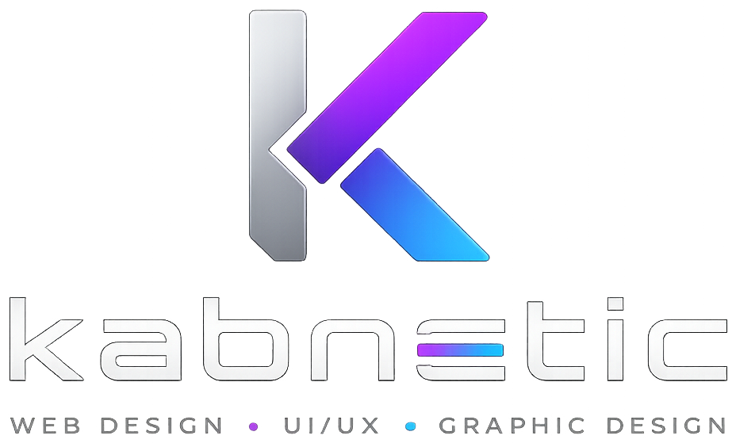

Thank you for reaching out.
Your message is on its way. I have received your enquiry and will get back to you as soon as possible.
Back to the portfolioReturning to the homepage in 3 seconds...

Your message is on its way. I have received your enquiry and will get back to you as soon as possible.
Back to the portfolioReturning to the homepage in 3 seconds...